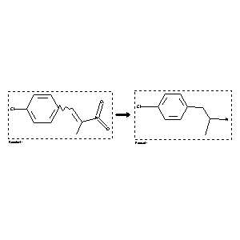

 |
| FA | RX(1); FLST(1); RX(2) |
Reaction (1 of 1)
| Reaction ID | 1074692 |
| Reactant BRN | 2047926 |
| Reactant | 1x-(4-chloro-phenyl)-2-nitro-propene |
| Product BRN | 2690849 |
| Product | 2-(4-chloro-phenyl)-1-methyl-ethylamine |
| No. of Reaction Details | 2 |
Reaction Details (1 of 1)
| Reaction Classification | Preparation |
| Reagent | LiAlH4 |
| Citation Pointer | 293037; Journal; Foye,W.O.; Tovivich,S.; JPMSAE; J.Pharm.Sci.; EN; 68; 1979; 591-595; |
Reaction Details (2 of 1)
| Reaction Classification | Preparation |
| Reagent | LiAlH4 |
| Solvent | diethyl ether; benzene |
| Citation Pointer | 80181; Journal; Benington,F. et al.; JMCMAR; J.Med.Chem.; EN; 8; 1965; 100-104; |
Reference (1 of 2)
| Citation Number | 80181 |
| Document Type | Journal |
| Authors | Benington,F. et al. |
| CODEN | JMCMAR |
| Journal Title | J.Med.Chem. |
| Language Code | EN |
| (Series) Volume | 8 |
| Publication Year | 1965 |
| Page | 100-104 |
Reference (2 of 2)
| Citation Number | 293037 |
| Document Type | Journal |
| Authors | Foye,W.O.; Tovivich,S. |
| CODEN | JPMSAE |
| Journal Title | J.Pharm.Sci. |
| Language Code | EN |
| (Series) Volume | 68 |
| Publication Year | 1979 |
| Page | 591-595 |